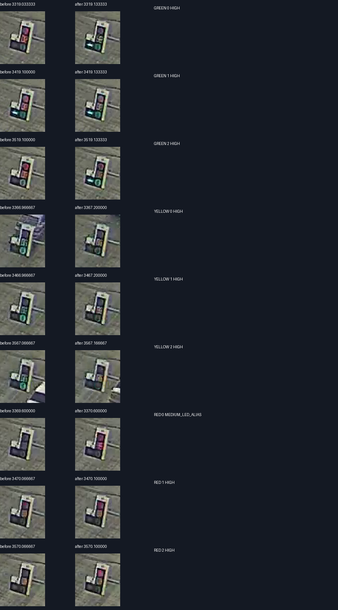
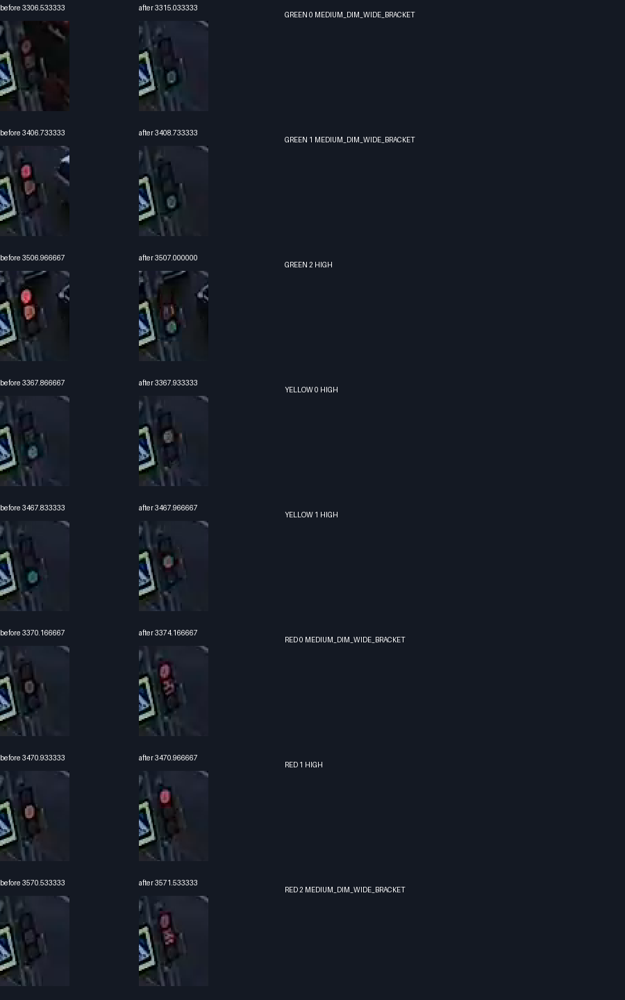

В общем расчёте временной истории появились YELLOW и RED_YELLOW: данные JSON, HTML, курсор и выгрузка используют одну историю. Переходы строятся для каждой основной головы по непрерывным участкам; основной зелёный не прерывается жёлтым при смене стрелки. Допсекции остаются GREEN/OFF. На пропусках и противоречиво коротких участках нет выдуманного цвета.
Для нового анализа перезапустите START_WEB.cmd из audit_checkout и откройте /visualization/learned. Выберите перекрёсток и загрузите исходный ZIP/JSON. Калибровка задержки Свердловского применяется только к точному SHA256 обученного источника; другой день получает общую модель переходов без этой численной поправки.
Росстандарт: действующий ГОСТ Р52289-2019, п.7.5.2 в тексте на mos.ru: основной жёлтый3с, красный с жёлтым не более2с; возможен режим без красного с жёлтым и предусмотрено исключение для старых контроллеров. Модель принимает2с как явное допущение, допускает0с. Зелёное мигание и мерцание LED на камере не объявляются жёлтым.
Параметры зафиксированы до просмотра этого участка. Размечены9 включений Свердловского (3 зелёных,3 жёлтых,3 красных) и8 Энтузиастов (3 зелёных,2 жёлтых,3 красных). Сомнительные интервалы расширены, третий жёлтый Энтузиастов не размечен. Красно-жёлтый onset независимо не проверен, это остаётся нормативной гипотезой.
Дополнительная пятая машина у конца часа Свердловского подтвердила прежний сдвиг часов1,253838с без подгонки по лампам; максимум ошибки10,96px при50px допуске. Условный диапазон1,127–1,369с зависит от геометрии и ручных точек и не является сертификатом аппаратных часов.
| Включение N main | MAE до | MAE после | В пределах0,5с от видеоинтервала |
|---|---|---|---|
| GREEN | 2.547 с | 0.097 с | 3/3 |
| YELLOW | не моделировался | 0.128 с | 3/3 |
| RED | 3.563 с | 0.122 с | 3/3 |
На уверенных внутренних интервалах этих трёх циклов ошибка состояния сократилась с25,88 до0,48с из275,17 оцениваемых секунд. Границы, их неопределённость и неразмеченные красно-жёлтые участки в эту долю не включены. Один лишь нормативный жёлтый без исправления задержки не улучшил эту метрику:25,88с.
Это проверка одной видимой основной головы на новом временном участке той же записи. Не является99,8% точностью всего алгоритма, независимым днём или проверкой всех стрелок/голов. MAE приведены по серединам интервалов кадров при фиксированном сдвиге часов; физическая погрешность устройства сюда не включена. Для Энтузиастов ошибка JSON↔видео не вычислена: часы офлайн-экспорта ещё не привязаны.
Код переходов и обучение отдельных задержек включения зелёного/красного не содержат названия перекрёстка или фиксированного запаздывания. Любая голова может быть обучена по своим clock-linked меткам первой части записи. Наблюдаемые потоки могут продолжаться на жёлтый или стоять при уступании: такие события не превращаются автоматически в GREEN/RED. Числа2,644/3,685с относятся к конкретно проверенной модели и источнику; совместное смещение границы фазы удерживает согласованность основных голов, но время остальных голов ещё не проверено отдельно.
Полный набор1392 tests PASS, затем38 затронутых проверок PASS после добавления общего API обучения. Два реальных ZIP обработаны без разметки при прогнозе. Сырые логические фазы по потокам сохранены; улучшена оценка сигналов и их временных переходов. Новая калибровка не заявляет автоматическое определение числа фаз.
Полные метрики · Свежая разметка Свердловского · Свежая разметка Энтузиастов · Общий метод воспроизводит замороженную поправку · Проверка реальных архивов


Первый предложенный before жёлтого Энтузиастов был исправлен на предыдущий фактический зелёный кадр3367.866667с перед окончательной фиксацией; исходное предложение сохранено.